Change analysis for Peru for PRIMAP-hist v2.8_final compared to
v2.7_final
This changelog is published under the creative commons non-commercial
share alike license. For more information see creativecommons.org.
Overview over
emissions by sector and gas
The following figures show the aggregate national total emissions
excluding LULUCF AR6GWP100 for the country reported priority scenario.
The dotted lines show the v2.7_final data.
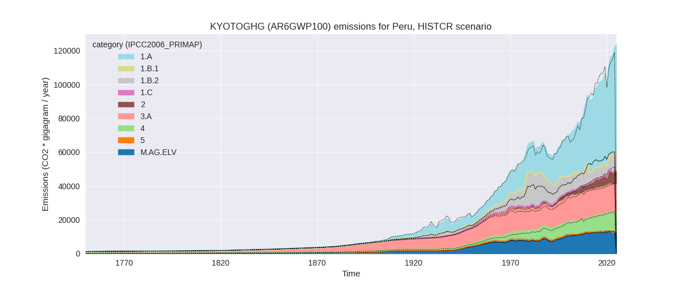
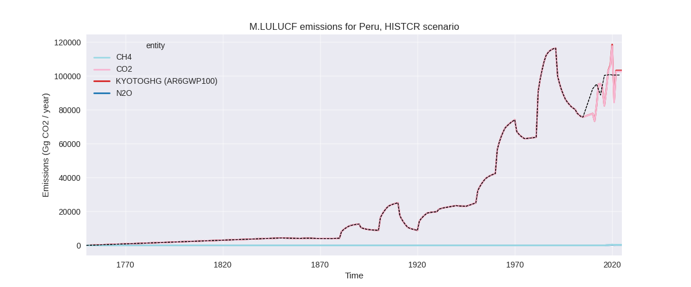
The following figures show the aggregate national total emissions
excluding LULUCF AR6GWP100 for the third party priority scenario. The
dotted lines show the v2.7_final data.
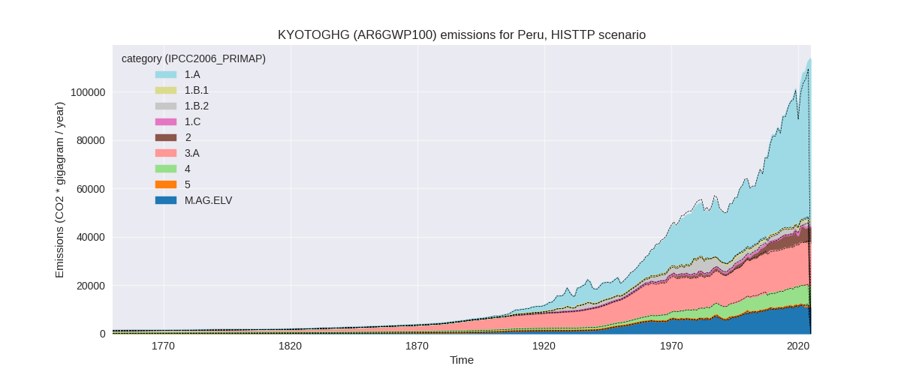
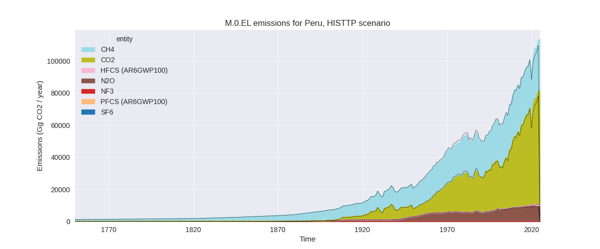
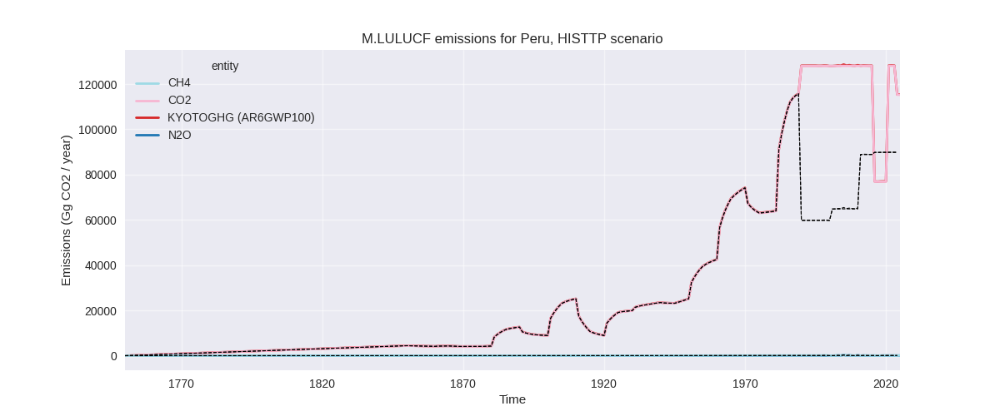
Used country reported data
The changelog with this information is available upon request for
non-commercial customers. Paying commercial customers will be provided
with the information.
Overview over changes
In the country reported priority scenario we have the following
changes for aggregate Kyoto GHG and national total emissions excluding
LULUCF (M.0.EL):
- Emissions in 2024 have changed by 2.3%% (2715.73 Gg CO2 / year)
- Emissions in 1990-2024 have changed by 0.4%% (320.15 Gg CO2 / year)
In the third party priority scenario we have the following changes
for aggregate Kyoto GHG and national total emissions excluding LULUCF
(M.0.EL):
- Emissions in 2024 have changed by 2.6%% (2857.52 Gg CO2 / year)
- Emissions in 1990-2024 have changed by 0.2%% (147.01 Gg CO2 / year)
Most
important changes per scenario and time frame
In the country reported priority scenario the
following sector-gas combinations have the highest absolute impact on
national total KyotoGHG (AR6GWP100) emissions in 2024
(up to 10 with either at least 0.2% impact on total emissions or at
least 20% change):
- 1: 1.A, CO2 with 3973.57 Gg CO2 / year (7.0%, 3.3%)
- 2: 2, CO2 with -2396.52 Gg CO2 / year (-29.3%, -2.0%)
- 3: 1.B.2, CO2 with 997.17 Gg CO2 / year (165.9%, 0.8%)
- 4: 1.B.2, CH4 with 568.80 Gg CO2 / year (7.1%, 0.5%)
- 5: M.AG.ELV, CH4 with -471.25 Gg CO2 / year (-20.3%, -0.4%)
- 6: 5, N2O with -420.32 Gg CO2 / year (-100.0%, -0.4%)
- 7: 4, N2O with 142.94 Gg CO2 / year (35.2%, 0.1%)
- 8: 1.A, N2O with 104.18 Gg CO2 / year (21.1%, 0.1%)
In the country reported priority scenario the
following sector-gas combinations have the highest absolute impact on
national total KyotoGHG (AR6GWP100) emissions in
1990-2024 (up to 10 with either at least 0.1% impact on
total emissions or at least 10% change):
- 1: M.AG.ELV, N2O with 796.83 Gg CO2 / year (9.1%, 1.0%)
- 2: 2, CO2 with -587.83 Gg CO2 / year (-13.5%, -0.7%)
- 3: 1.B.2, CH4 with 473.49 Gg CO2 / year (6.2%, 0.6%)
- 4: 1.A, CO2 with -439.98 Gg CO2 / year (-1.3%, -0.5%)
- 5: 5, N2O with -395.09 Gg CO2 / year (-100.0%, -0.5%)
- 6: M.AG.ELV, CH4 with -331.96 Gg CO2 / year (-18.0%, -0.4%)
- 7: 1.B.2, CO2 with 298.88 Gg CO2 / year (46.4%, 0.4%)
- 8: 4, CH4 with 268.13 Gg CO2 / year (3.4%, 0.3%)
- 9: M.AG.ELV, CO2 with 136.65 Gg CO2 / year (59.4%, 0.2%)
In the third party priority scenario the following
sector-gas combinations have the highest absolute impact on national
total KyotoGHG (AR6GWP100) emissions in 2024 (up to 10
with either at least 0.2% impact on total emissions or at least 20%
change):
- 1: 1.A, CO2 with 4339.67 Gg CO2 / year (7.3%, 4.0%)
- 2: 2, CO2 with -857.98 Gg CO2 / year (-14.0%, -0.8%)
- 3: M.AG.ELV, N2O with -543.59 Gg CO2 / year (-7.2%, -0.5%)
- 4: 1.B.2, CH4 with 380.78 Gg CO2 / year (22.9%, 0.3%)
- 5: M.AG.ELV, CO2 with -352.29 Gg CO2 / year (-27.8%, -0.3%)
- 6: 1.B.2, CO2 with -144.39 Gg CO2 / year (-58.5%, -0.1%)
- 7: 5, N2O with 125.59 Gg CO2 / year (29.9%, 0.1%)
- 8: 1.A, N2O with 113.28 Gg CO2 / year (21.2%, 0.1%)
In the third party priority scenario the following
sector-gas combinations have the highest absolute impact on national
total KyotoGHG (AR6GWP100) emissions in 1990-2024 (up
to 10 with either at least 0.1% impact on total emissions or at least
10% change):
- 1: 1.A, CO2 with 703.97 Gg CO2 / year (2.0%, 0.9%)
- 2: 4, CH4 with -433.80 Gg CO2 / year (-6.9%, -0.6%)
- 3: 1.B.2, CO2 with -79.34 Gg CO2 / year (-18.7%, -0.1%)
- 4: 2, N2O with 21.01 Gg CO2 / year (38.8%, 0.0%)
Notes on data changes
The changelog with this information is available upon request for
non-commercial customers. Paying commercial customers will be provided
with the information.
Changes by sector and gas
For each scenario and time frame the changes are displayed for all
individual sectors and all individual gases. In the sector plot we use
aggregate Kyoto GHGs in AR6GWP100. In the gas plot we usenational total
emissions without LULUCF.
country reported scenario
2024
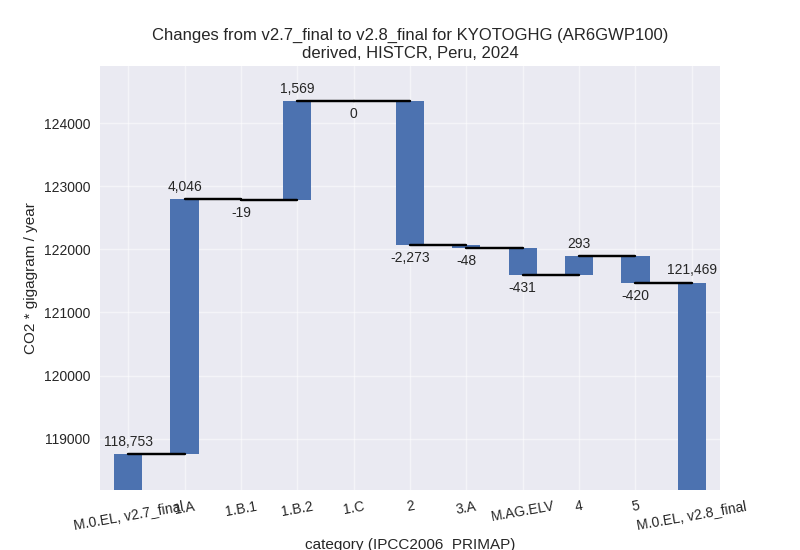
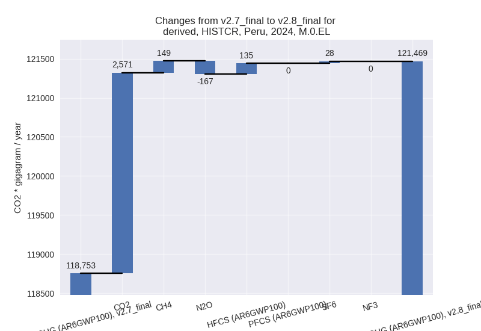
1990-2024
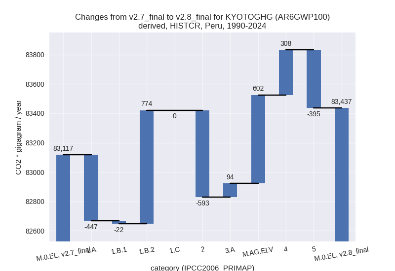
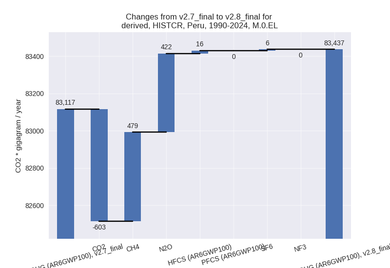
third party scenario
2024
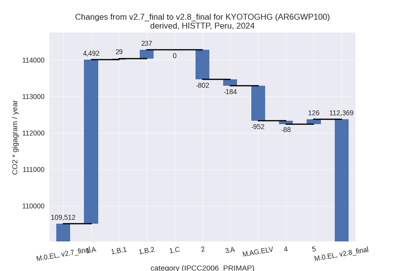
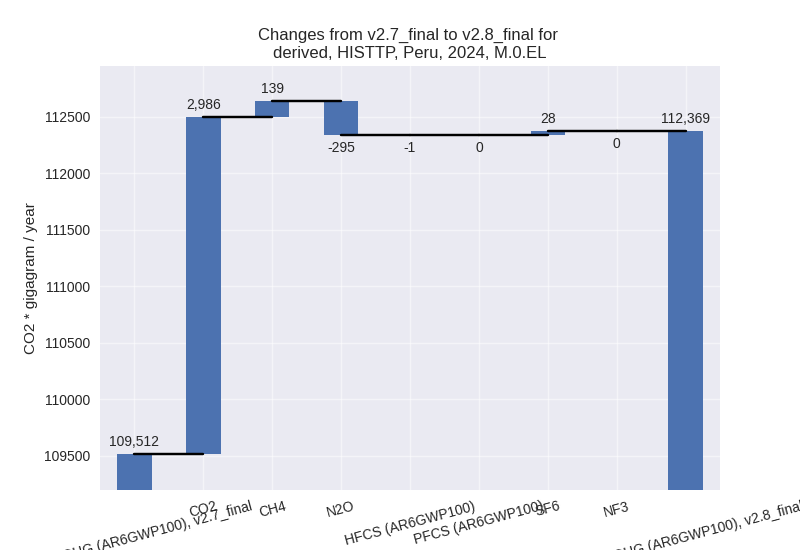
1990-2024
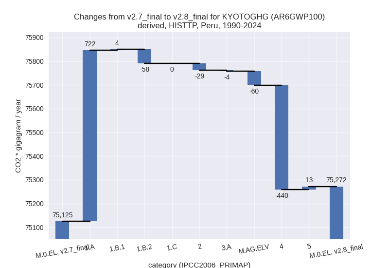
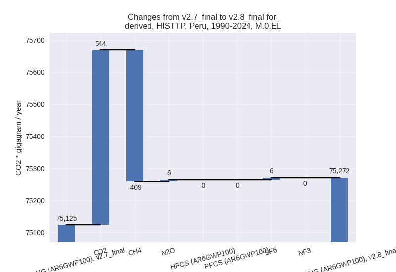
Detailed changes for the
scenarios:
country reported scenario
(HISTCR):
Most important changes
per time frame
For 2024 the following sector-gas combinations have
the highest absolute impact on national total KyotoGHG (AR6GWP100)
emissions in 2024 (up to 20 with either at least 0.2%
impact on total emissions or at least 20% change):
- 1: 1.A, CO2 with 3973.57 Gg CO2 / year (7.0%), 3.3%)
- 2: 2, CO2 with -2396.52 Gg CO2 / year (-29.3%), -2.0%)
- 3: 1.B.2, CO2 with 997.17 Gg CO2 / year (165.9%), 0.8%)
- 4: 1.B.2, CH4 with 568.80 Gg CO2 / year (7.1%), 0.5%)
- 5: M.AG.ELV, CH4 with -471.25 Gg CO2 / year (-20.3%), -0.4%)
- 6: 5, N2O with -420.32 Gg CO2 / year (-100.0%), -0.4%)
- 7: 4, N2O with 142.94 Gg CO2 / year (35.2%), 0.1%)
- 8: 1.A, N2O with 104.18 Gg CO2 / year (21.1%), 0.1%)
- 9: 2, N2O with -39.49 Gg CO2 / year (-58.4%), -0.0%)
- 10: 2, SF6 with 28.33 Gg CO2 / year (inf%), 0.0%)
- 11: 1.B.2, N2O with 2.77 Gg CO2 / year (188.8%), 0.0%)
- 12: 1.B.1, N2O with -1.35 Gg CO2 / year (-24.3%), -0.0%)
For 1990-2024 the following sector-gas combinations
have the highest absolute impact on national total KyotoGHG (AR6GWP100)
emissions in 1990-2024 (up to 20 with either at least
0.1% impact on total emissions or at least 10% change):
- 1: M.AG.ELV, N2O with 796.83 Gg CO2 / year (9.1%), 1.0%)
- 2: 2, CO2 with -587.83 Gg CO2 / year (-13.5%), -0.7%)
- 3: 1.B.2, CH4 with 473.49 Gg CO2 / year (6.2%), 0.6%)
- 4: 1.A, CO2 with -439.98 Gg CO2 / year (-1.3%), -0.5%)
- 5: 5, N2O with -395.09 Gg CO2 / year (-100.0%), -0.5%)
- 6: M.AG.ELV, CH4 with -331.96 Gg CO2 / year (-18.0%), -0.4%)
- 7: 1.B.2, CO2 with 298.88 Gg CO2 / year (46.4%), 0.4%)
- 8: 4, CH4 with 268.13 Gg CO2 / year (3.4%), 0.3%)
- 9: M.AG.ELV, CO2 with 136.65 Gg CO2 / year (59.4%), 0.2%)
- 10: 4, N2O with 40.13 Gg CO2 / year (12.5%), 0.0%)
- 11: 2, N2O with -27.44 Gg CO2 / year (-56.6%), -0.0%)
- 12: 1.B.1, CO2 with -10.19 Gg CO2 / year (-99.9%), -0.0%)
- 13: 2, SF6 with 6.27 Gg CO2 / year (inf%), 0.0%)
- 14: 1.B.2, N2O with 1.84 Gg CO2 / year (136.1%), 0.0%)
Changes in the main sectors for aggregate KyotoGHG (AR6GWP100)
are
- 1: Total sectoral emissions in 2022 are 67043.10 Gg
CO2 / year which is 57.7% of M.0.EL emissions. 2024 Emissions have
changed by 8.3% (5595.22 Gg CO2 /
year). 1990-2024 Emissions have changed by 0.7% (304.96 Gg CO2 / year). For 2024 the
changes per gas
are:
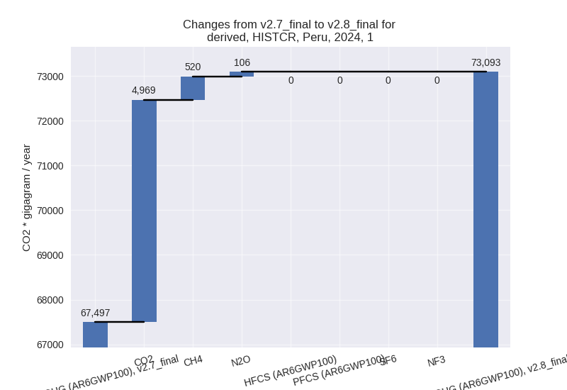
The changes come from the following subsectors:
- 1.A: Total sectoral emissions in 2022 are 57582.63
Gg CO2 / year which is 85.9% of category 1 emissions. 2024 Emissions
have changed by 6.9% (4045.85 Gg CO2
/ year). 1990-2024 Emissions have changed by -1.3% (-447.13 Gg CO2 / year). For 2024
the changes per gas
are:
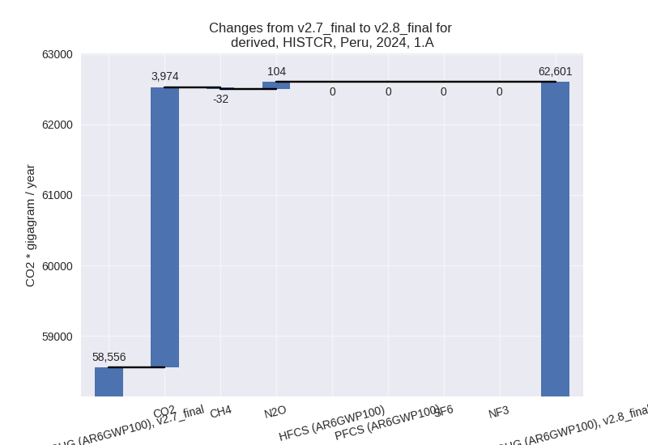
There is no subsector information available in PRIMAP-hist.
- 1.B.1: Total sectoral emissions in 2022 are 260.56
Gg CO2 / year which is 0.4% of category 1 emissions. 2024 Emissions have
changed by -6.9% (-19.37 Gg CO2 /
year). 1990-2024 Emissions have changed by -14.7% (-22.13 Gg CO2 / year). For 2024
the changes per gas
are:
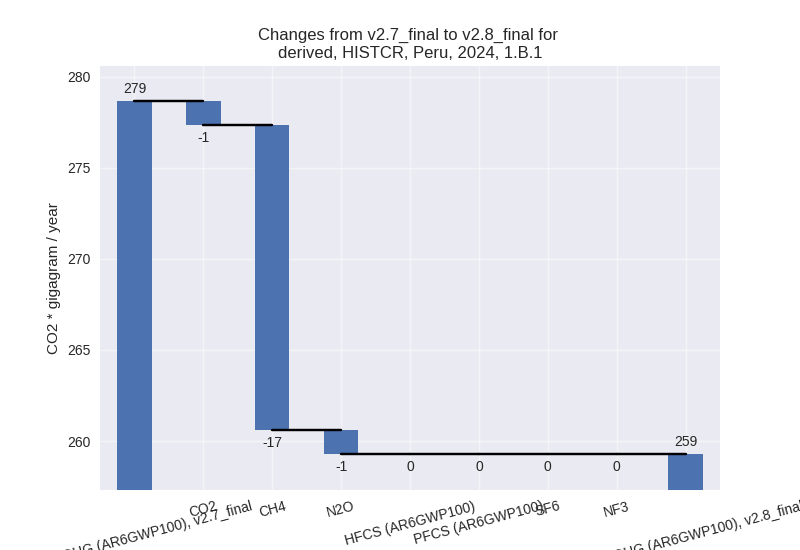
For 1990-2024 the changes per gas
are:
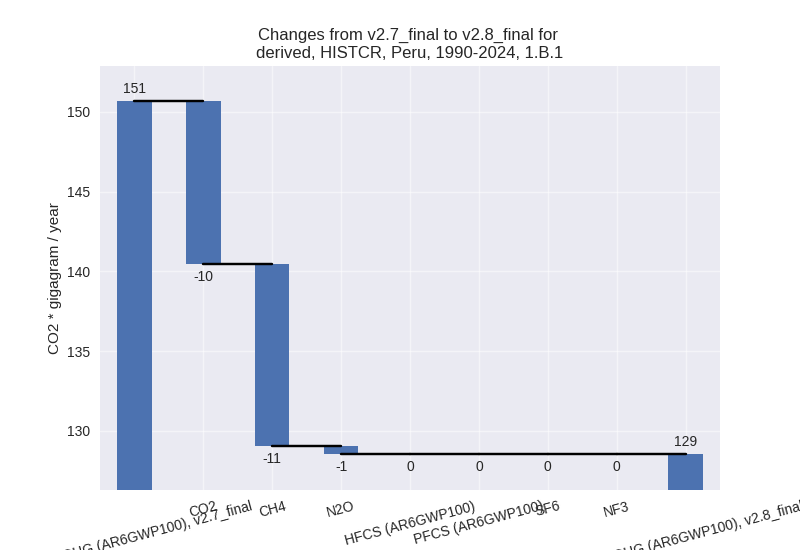
There is no subsector information available in PRIMAP-hist.
- 1.B.2: Total sectoral emissions in 2022 are 9199.91
Gg CO2 / year which is 13.7% of category 1 emissions. 2024 Emissions
have changed by 18.1% (1568.74 Gg
CO2 / year). 1990-2024 Emissions have changed by 9.4% (774.22 Gg CO2 / year). For 2024 the
changes per gas
are:
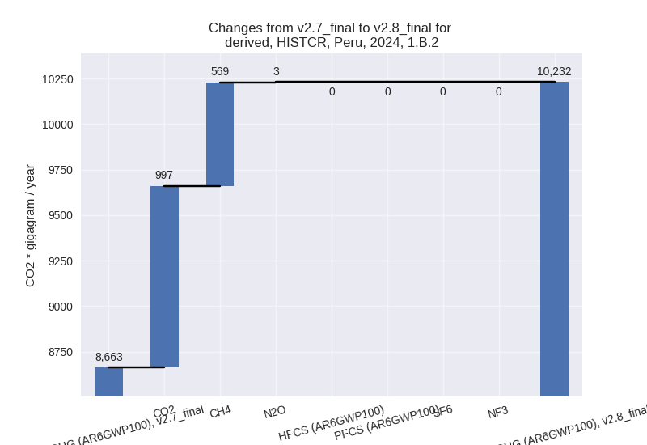
For 1990-2024 the changes per gas
are:
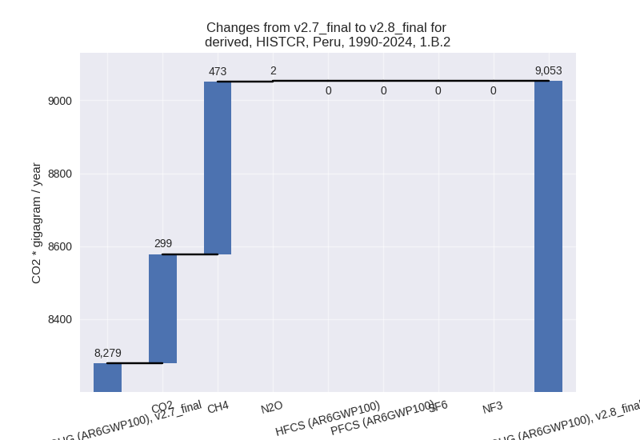
There is no subsector information available in PRIMAP-hist.
- 2: Total sectoral emissions in 2022 are 8174.84 Gg
CO2 / year which is 7.0% of M.0.EL emissions. 2024 Emissions have
changed by -23.1% (-2273.05 Gg CO2 /
year). 1990-2024 Emissions have changed by -12.5% (-592.98 Gg CO2 / year). For 2024
the changes per gas
are:
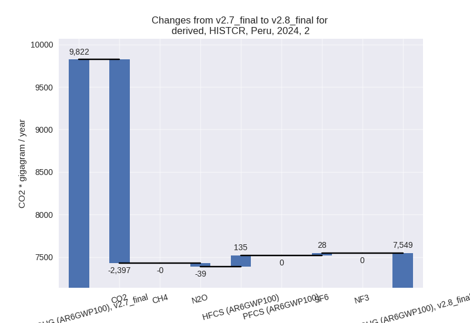
For 1990-2024 the changes per gas
are:
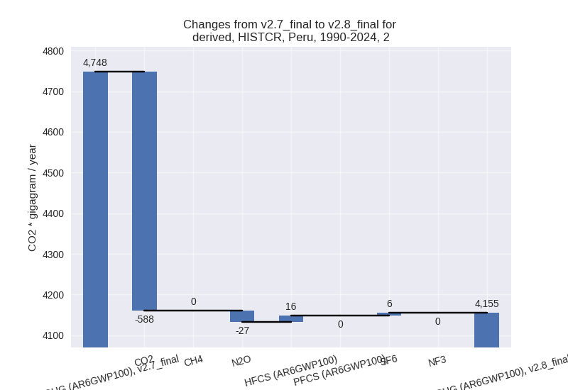
- M.AG: Total sectoral emissions in 2022 are 29740.69
Gg CO2 / year which is 25.6% of M.0.EL emissions. 2024 Emissions have
changed by -1.6% (-478.90 Gg CO2 /
year). 1990-2024 Emissions have changed by 2.7% (695.63 Gg CO2 / year). For 1990-2024
the changes per gas
are:
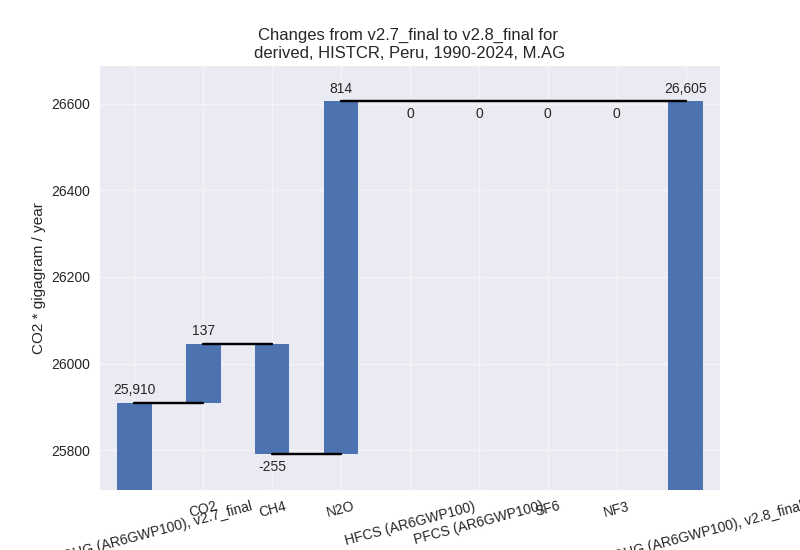
The changes come from the following subsectors:
- 3.A: Total sectoral emissions in 2022 are 16643.23
Gg CO2 / year which is 56.0% of category M.AG emissions. 2024 Emissions
have changed by -0.3% (-48.17 Gg CO2
/ year). 1990-2024 Emissions have changed by 0.6% (94.11 Gg CO2 / year).
- M.AG.ELV: Total sectoral emissions in 2022 are
13097.46 Gg CO2 / year which is 44.0% of category M.AG emissions. 2024
Emissions have changed by -3.3%
(-430.73 Gg CO2 / year). 1990-2024 Emissions have changed by 5.6% (601.52 Gg CO2 / year). For 2024 the
changes per gas
are:
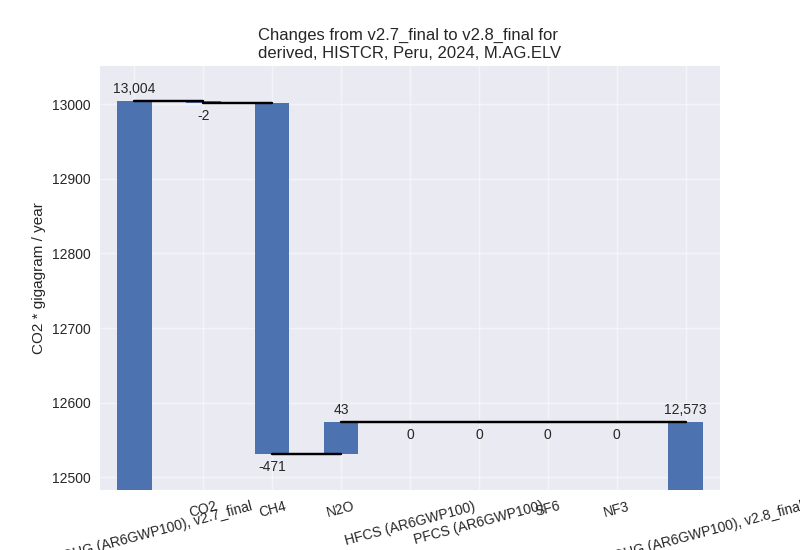
For 1990-2024 the changes per gas
are:
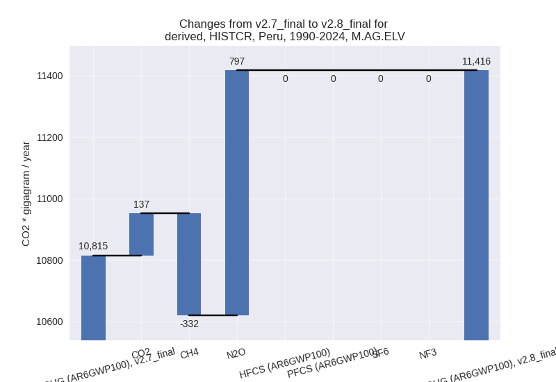
There is no subsector information available in PRIMAP-hist.
- 4: Total sectoral emissions in 2022 are 11273.45 Gg
CO2 / year which is 9.7% of M.0.EL emissions. 2024 Emissions have
changed by 2.6% (292.78 Gg CO2 /
year). 1990-2024 Emissions have changed by 3.7% (307.63 Gg CO2 / year). For 2024 the
changes per gas
are:
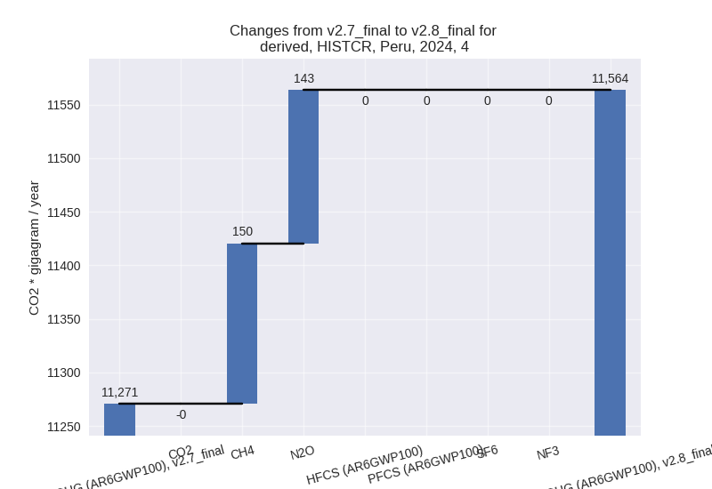
For 1990-2024 the changes per gas
are:
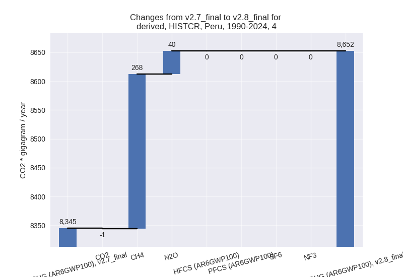
- 5: Total sectoral emissions in 2022 are 0.00 Gg CO2
/ year which is 0.0% of M.0.EL emissions. 2024 Emissions have changed by
-100.0% (-420.32 Gg CO2 / year).
1990-2024 Emissions have changed by -100.0% (-395.09 Gg CO2 / year). For 2024
the changes per gas
are:
For 1990-2024 the changes per gas
are:
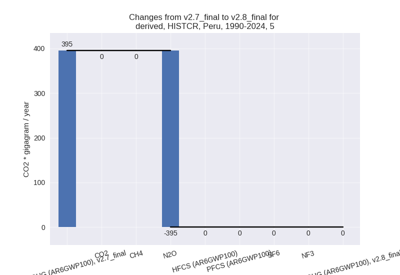
third party scenario (HISTTP):
Most important changes
per time frame
For 2024 the following sector-gas combinations have
the highest absolute impact on national total KyotoGHG (AR6GWP100)
emissions in 2024 (up to 20 with either at least 0.2%
impact on total emissions or at least 20% change):
- 1: 1.A, CO2 with 4339.67 Gg CO2 / year (7.3%), 4.0%)
- 2: 2, CO2 with -857.98 Gg CO2 / year (-14.0%), -0.8%)
- 3: M.AG.ELV, N2O with -543.59 Gg CO2 / year (-7.2%), -0.5%)
- 4: 1.B.2, CH4 with 380.78 Gg CO2 / year (22.9%), 0.3%)
- 5: M.AG.ELV, CO2 with -352.29 Gg CO2 / year (-27.8%), -0.3%)
- 6: 1.B.2, CO2 with -144.39 Gg CO2 / year (-58.5%), -0.1%)
- 7: 5, N2O with 125.59 Gg CO2 / year (29.9%), 0.1%)
- 8: 1.A, N2O with 113.28 Gg CO2 / year (21.2%), 0.1%)
- 9: 2, SF6 with 28.33 Gg CO2 / year (inf%), 0.0%)
- 10: 2, N2O with 28.13 Gg CO2 / year (98.7%), 0.0%)
- 11: 1.B.1, CO2 with 0.57 Gg CO2 / year (43.0%), 0.0%)
- 12: 1.B.2, N2O with 0.38 Gg CO2 / year (44.2%), 0.0%)
For 1990-2024 the following sector-gas combinations
have the highest absolute impact on national total KyotoGHG (AR6GWP100)
emissions in 1990-2024 (up to 20 with either at least
0.1% impact on total emissions or at least 10% change):
- 1: 1.A, CO2 with 703.97 Gg CO2 / year (2.0%), 0.9%)
- 2: 4, CH4 with -433.80 Gg CO2 / year (-6.9%), -0.6%)
- 3: 1.B.2, CO2 with -79.34 Gg CO2 / year (-18.7%), -0.1%)
- 4: 2, N2O with 21.01 Gg CO2 / year (38.8%), 0.0%)
- 5: 2, SF6 with 6.27 Gg CO2 / year (inf%), 0.0%)
Changes in the main sectors for aggregate KyotoGHG (AR6GWP100)
are
- 1: Total sectoral emissions in 2022 are 62950.15 Gg
CO2 / year which is 58.5% of M.0.EL emissions. 2024 Emissions have
changed by 7.5% (4757.57 Gg CO2 /
year). 1990-2024 Emissions have changed by 1.7% (667.00 Gg CO2 / year). For 2024 the
changes per gas
are:
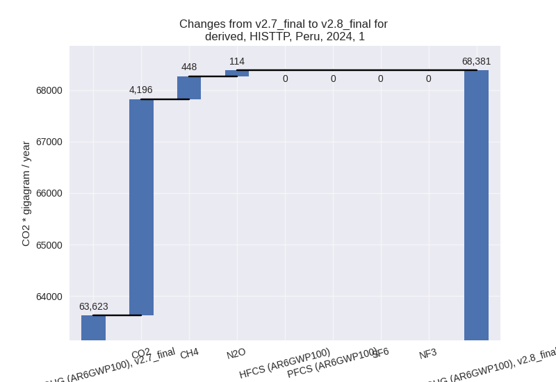
The changes come from the following subsectors:
- 1.A: Total sectoral emissions in 2022 are 60376.98
Gg CO2 / year which is 95.9% of category 1 emissions. 2024 Emissions
have changed by 7.3% (4491.90 Gg CO2
/ year). 1990-2024 Emissions have changed by 2.0% (721.69 Gg CO2 / year). For 2024 the
changes per gas
are:
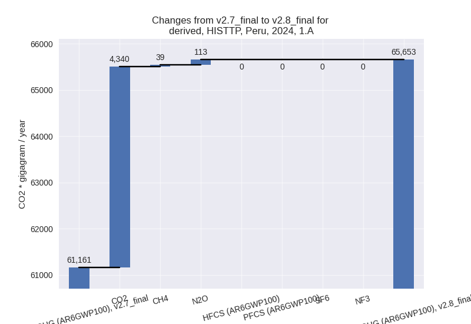
There is no subsector information available in PRIMAP-hist.
- 1.B.1: Total sectoral emissions in 2022 are 580.67
Gg CO2 / year which is 0.9% of category 1 emissions. 2024 Emissions have
changed by 5.3% (28.91 Gg CO2 /
year). 1990-2024 Emissions have changed by 0.7% (3.51 Gg CO2 / year). For 2024 the
changes per gas
are:
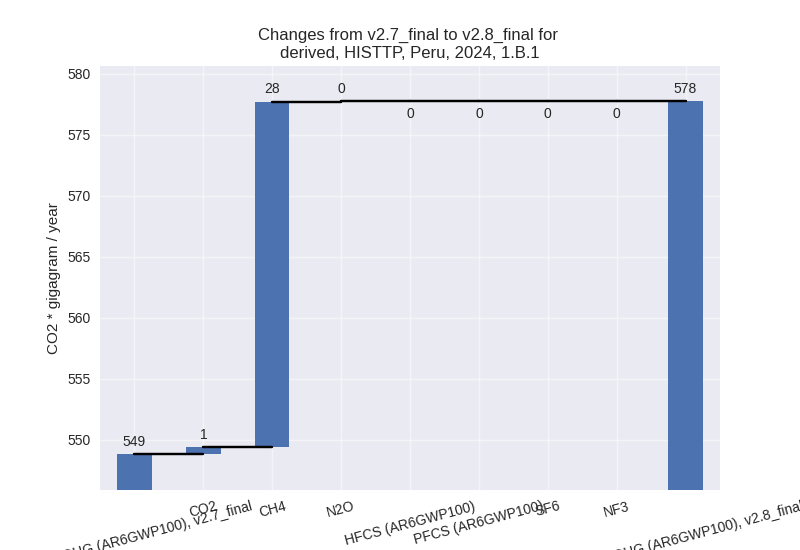
There is no subsector information available in PRIMAP-hist.
- 1.B.2: Total sectoral emissions in 2022 are 1992.50
Gg CO2 / year which is 3.2% of category 1 emissions. 2024 Emissions have
changed by 12.4% (236.76 Gg CO2 /
year). 1990-2024 Emissions have changed by -2.4% (-58.20 Gg CO2 / year). For 2024 the
changes per gas
are:
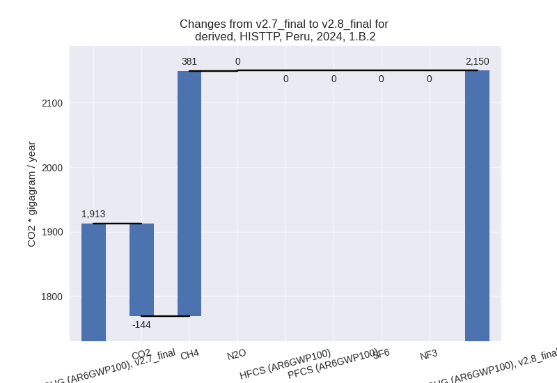
For 1990-2024 the changes per gas
are:
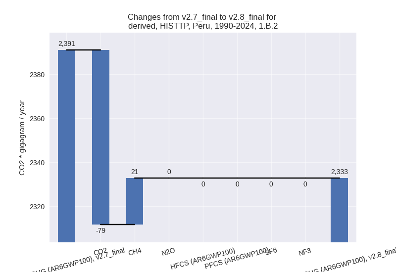
There is no subsector information available in PRIMAP-hist.
- 2: Total sectoral emissions in 2022 are 7218.10 Gg
CO2 / year which is 6.7% of M.0.EL emissions. 2024 Emissions have
changed by -10.8% (-802.07 Gg CO2 /
year). 1990-2024 Emissions have changed by -0.7% (-28.82 Gg CO2 / year). For 2024 the
changes per gas
are:
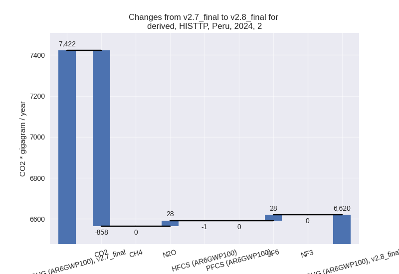
- M.AG: Total sectoral emissions in 2022 are 28994.27
Gg CO2 / year which is 26.9% of M.0.EL emissions. 2024 Emissions have
changed by -3.8% (-1135.93 Gg CO2 /
year). 1990-2024 Emissions have changed by -0.3% (-64.49 Gg CO2 / year). For 2024 the
changes per gas
are:
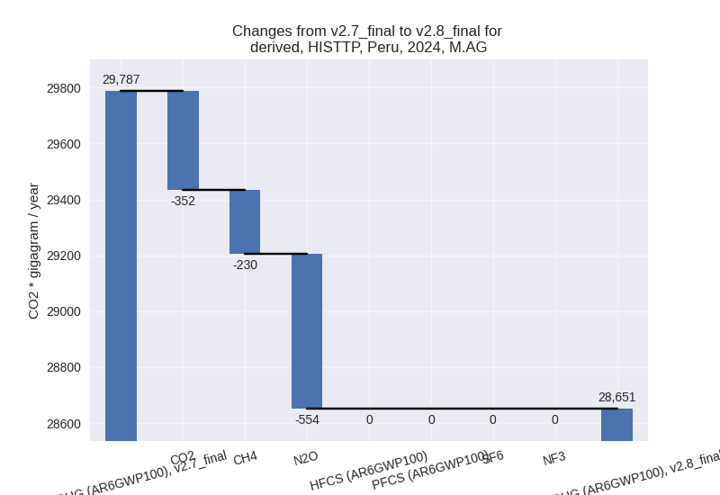
The changes come from the following subsectors:
- 3.A: Total sectoral emissions in 2022 are 17796.44
Gg CO2 / year which is 61.4% of category M.AG emissions. 2024 Emissions
have changed by -1.0% (-184.43 Gg
CO2 / year). 1990-2024 Emissions have changed by -0.0% (-4.18 Gg CO2 / year).
- M.AG.ELV: Total sectoral emissions in 2022 are
11197.83 Gg CO2 / year which is 38.6% of category M.AG emissions. 2024
Emissions have changed by -8.1%
(-951.50 Gg CO2 / year). 1990-2024 Emissions have changed by -0.7% (-60.31 Gg CO2 / year). For 2024 the
changes per gas
are:
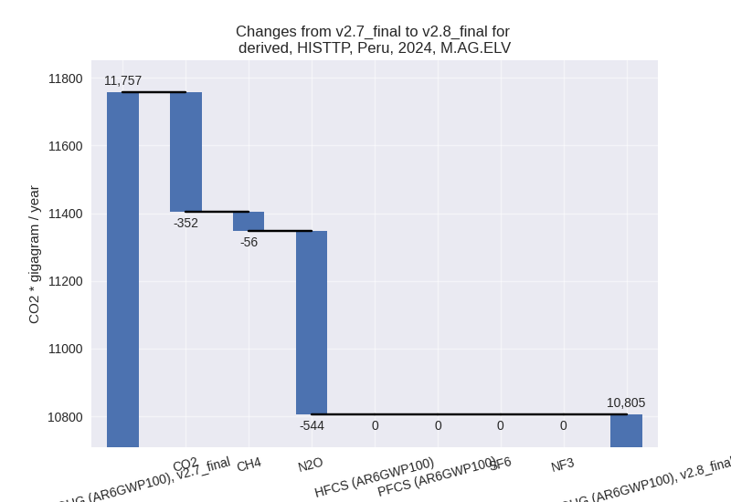
There is no subsector information available in PRIMAP-hist.
- 4: Total sectoral emissions in 2022 are 7964.08 Gg
CO2 / year which is 7.4% of M.0.EL emissions. 2024 Emissions have
changed by -1.1% (-87.64 Gg CO2 /
year). 1990-2024 Emissions have changed by -6.6% (-439.55 Gg CO2 / year). For
1990-2024 the changes per gas
are:
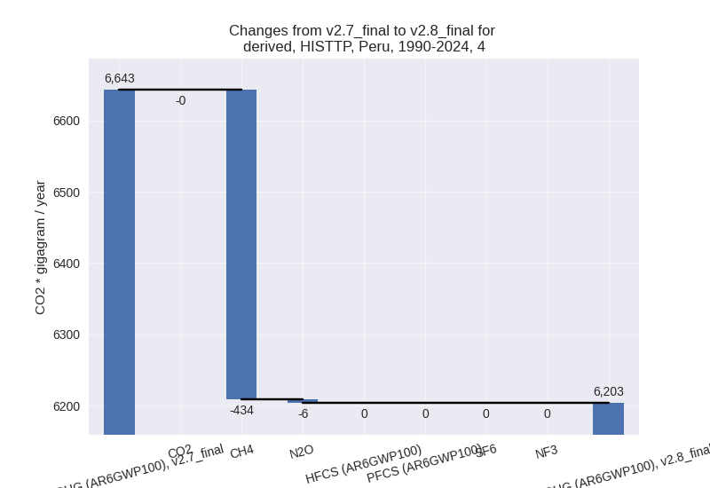
- 5: Total sectoral emissions in 2022 are 486.93 Gg
CO2 / year which is 0.5% of M.0.EL emissions. 2024 Emissions have
changed by 29.9% (125.59 Gg CO2 /
year). 1990-2024 Emissions have changed by 3.3% (12.86 Gg CO2 / year). For 2024 the
changes per gas
are:
For 1990-2024 the changes per gas
are:
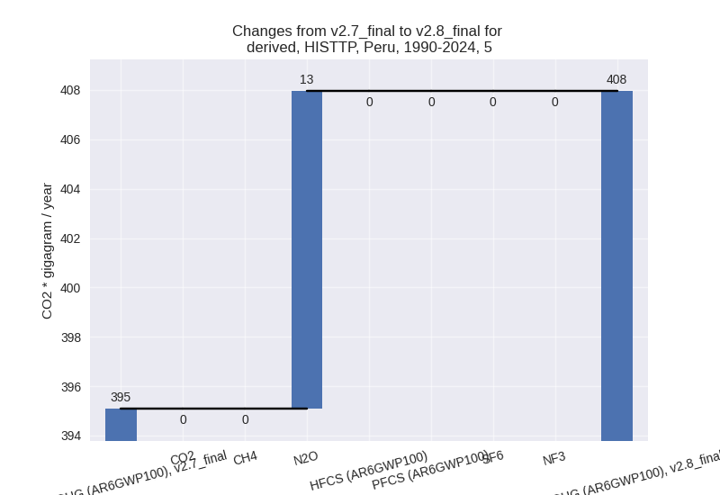